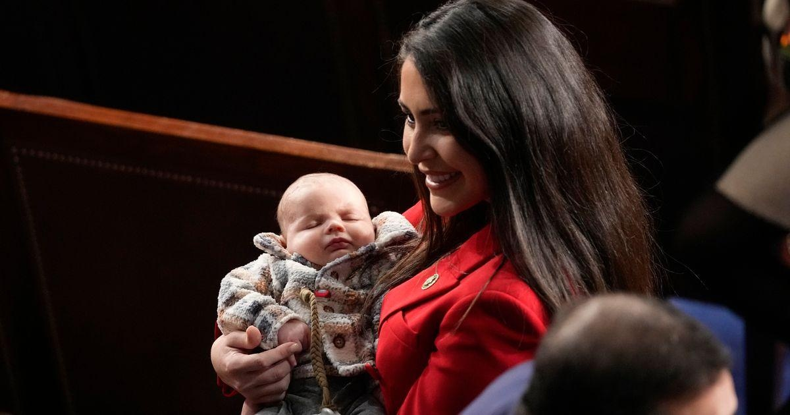

New GOP Mom In Congress Wants Family Separation For Migrants, But Not For New Moms In CongressOn Tuesday, freshman Rep. Anna Paulina Luna (R-Fla.) introduced a bill allowing House members to cast votes on behalf of new mothers unable to attend Congress in person, giving the mothers time to recover and be with their newborns without the hassle of traveling to Washington for work. On Wednesday, in a tense exchange with a witness at a committee hearing, Luna said she wanted migrants claiming asylum at the U.S. border to be at least temporarily separated from any children who accompany them. “The reason why we want family separation, until we can confirm if they are the actual biological parents, is because these kids are being trafficked,” she said at a House oversight hearing on immigration. The witness, David Bier, associate director of immigration studies at the libertarian Cato Institute, had said the Donald Trump administration had engaged in unnecessary “psychological torture of children” with its family separation policy. He challenged Luna’s assertion of widespread child trafficking by people posing as young migrants’ parents, which led to the exchange. Luna doubled down later in the day on her comment, saying in a video posted on social media she did not make apologies for endorsing the family separation policy even though it “triggered a lot of people.” “I’m sorry that we’re breaking through your programming, but the fact is family separation and biological confirmation saves lives,” she said. Just a day before the hearing, Luna introduced H. Res. 967, which would change the rules of the House to allow members who had given birth up to six weeks afterwards to vote by proxy. At a press conference Thursday, Luna didn’t answer directly when asked if she saw any contradiction in her stances. “I think we need to focus on the maternity vote by proxy,” she said. “What I can tell you is I don’t make any apologies for that statement,” she said of the family separation dustup. “I would absolutely rather have my child confirmed that that’s my biological child if someone was claiming to be their parent.” House Republicans strenuously opposed proxy voting when it was instituted by then-Speaker Nancy Pelosi (D-Calif.) during the height of the COVID-19 pandemic as a safety measure. But Luna, who gave birth to a son named George Henry in August, told the New York Times her perspective had changed in part because of post-pregnancy medical complications that kept her from being able to travel for a while. “You’re being forced to choose between your career and having a family,” she said. On Thursday, she said the bill should get bipartisan support, with Democrats being “pro-women” and Republicans being “pro-family,” but said both sides have reservations. “We champion pro-life and and pro-family values, but there’s some hesitancy I think on supporting it,” she said. Luna’s bill had drawn 24 co-sponsors as of Thursday. Only four were Republicans, however, and two of those were women, Reps. Mary Miller (R-Ill.) and Lori Chavez-DeRemer (R-Ore.). Fearing a backlash from the U.S. Supreme Court’s Dobbs decision allowing states to restrict abortion access, Republicans are trying to emphasize their family-friendly credentials ahead of November. “We want to make it easier for working mothers and moms and dads to start and raise a family,” House Speaker Mike Johnson (R-La.) said at a press conference on Wednesday. Luna herself leaned into her own new role in her back-and-forth at Wednesday’s hearing. When Beir started to challenge her by saying, “As a father,” Luna cut him off. “I’m a mother,” she said. “We can go back and forth.” |
 |